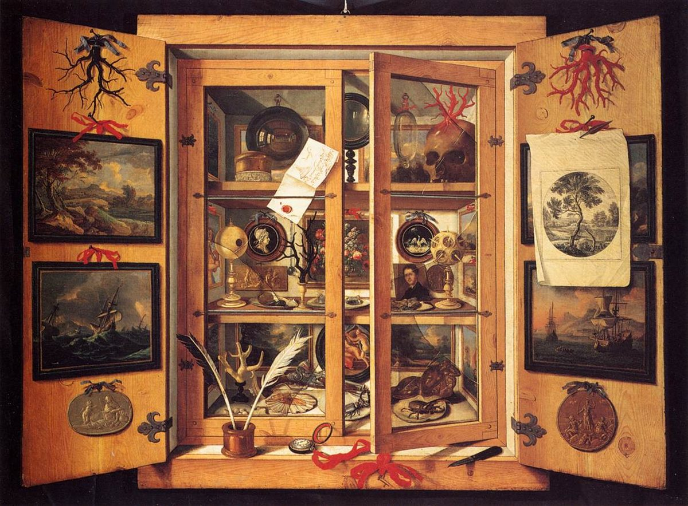

Course presentation · Week 12
Recognizing Antiques: Intuition Without Experience
Insights from Cognitive Science, History, and Playful Design
Designed for elderly cognitive therapy
Scroll to begin

Introduction to the Topic
What if older adults could develop an intuitive sense for recognizing antiques without prior expertise?
This presentation explores how insights from cognitive science, history, and playful design can inform a therapeutic activity to enhance cognition, memory, and engagement in elderly therapy.
Intuition is the ability to judge properties based on unconsciously activated memory, even without direct experience. It emerges from implicit learning and can be cultivated through targeted activities.

Insights from History
Antique recognition has evolved from ancient collecting in Greece, Rome, and Egypt to modern valuation based on rarity, provenance, and craftsmanship. Relevant academic works include Empire Without End: Antiquities Collections in Renaissance Rome, c. 1350–1527 by KW Christian (2010), which examines early collecting practices. Another is A Late Antique Statuary Collection at Ostia's Sanctuary of Magna Mater by Douglas Boin, providing insights into late antique collections.
Historical automata (500–1500 CE) inspire playful reminiscence, such as the Mechanical Monk (1560) with walking and praying motions, or Al-Jazari's Floating Orchestra (1206) for surprises.
In therapy, historical storytelling around antiques preserves personal and cultural memories, linking to reminiscence therapy that improves cognitive status in seniors.

Historical factors influencing value
Rarity
Limited production increases worth.
Provenance
Documented history adds significance.
Craftsmanship
Handmade details from eras like Victorian or Mid-Century.
Insights from Playful Design
Playful design integrates fun elements into learning to build intuition through engagement, iteration, and joy. It transforms spaces and activities into skill-building experiences.
Key academic papers include Principles of Adult Play(fulness) in Contemporary Toy Cultures: From Wow to Flow to Glow by K Heljakka (2013), outlining adult play principles. Also, Co-creativity Through Play and Game Design Thinking by S Arnab et al. (2019) emphasizes collaborative play in design. Designing for Playful Math Engagement Across Learning Environments by C Lee et al. explores playful engagement in education.
Six playful principles from the course
-
Pinokio Lamp · Mechanical Monk
Affective + abstract motion
Subtle movements for emotional engagement.
-
Drift Table · Floating Orchestra
Ludic activities
Curiosity and exploration, without a task to finish.
-
Brainball · Digesting Duck
Mind-body push-and-pull
Control contests that make effort feel like play.
-
Silver Swan
Magic circle
Enchanted zones for reflection.
-
The Writer
Openness and ambiguity
Reimagining stories with twists.
-
Tipoo's Tiger
Non-utilitarian fun
Blurring play and life with surprises.
Core principles
-
Active engagement
Hands-on interactions foster meaningful learning.
-
Social interaction
Group play enhances motivation and memory.
-
Iteration and joy
Trial-and-error in a fun context builds intuition.
For games, incorporate familiar elements to make them accessible for older adults.

Application to Elderly Therapy
Elderly therapy benefits from activities that stimulate cognition, such as reminiscence with old photos or objects.
Academic studies like Effects of Reminiscence Therapy on Cognitive Function in Institutionalized Elderly People with Dementia: Meta-analysis by S Jun support its efficacy, and The Effect of Group Reminiscence Therapy on Death Anxiety and Adaptation of the Elderly to Old Age by Z Faramarzian et al. shows benefits for emotional well-being.
Antique recognition fits perfectly as a historic activity, promoting memory recall and focus. Playful AI inspired by antiques enhances voluntary involvement and curiosity for older adults.
What gets in the way
Cognitive decline (e.g., dementia), and the need for low-pressure, enjoyable tasks.
Play the memory forward
Blend intuition-building with play to delay memory loss and provide socialization. Games like puzzles or trivia, adapted to antiques.


Proposed Therapeutic Design — “Antique Intuition Quest”
A playful game for older adults.
Group sessions
4–6 participants with a facilitator. Use physical antiques or images.
Make it easy to join
Large visuals, simple rules, tied to personal memories. Incorporate gamification like badges for intuition “wins.”
A cabinet of cues
Memory boxes with antiques, digital apps for virtual hunts with ambiguity and exploration features.
How a round plays out
- Show an object; guess era, value, or story intuitively.
- Discuss cues (e.g., material, wear) to build patterns.
- Playful twists: points for creative stories, no wrong answers; add clockwork surprises or random medieval elements.
This design draws from co-design with older adults for relevance. For intuition building in cognitive games, see Episodic Memory Visualization in Robot Companions Providing a Memory Prosthesis for Elderly Users by JS Pons et al. (2015).